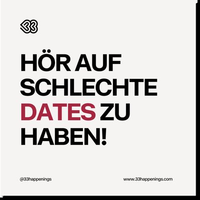
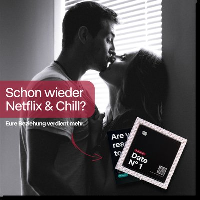
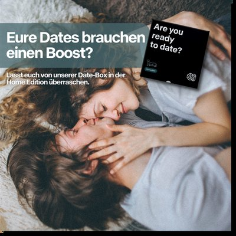
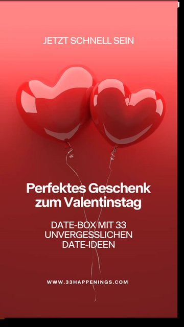

Performance-driven Meta ads for an e-commerce brand: I developed the concept, wrote the copy, designed the creatives and built the variations the campaign was tested with.




Hook variations, benefit and proof variations, audiences and placements, and format adaptations for feed and stories.
Iterations based on performance signals, A/B tests, and scaling of the winning variations.
Best-performing creatives identified, scaled, and developed into further variations. [ROAS / CPA / CTR result]
Scroll-stopping hooks with a clear everyday situation or pain point were crucial for performance – more than any visual polish.